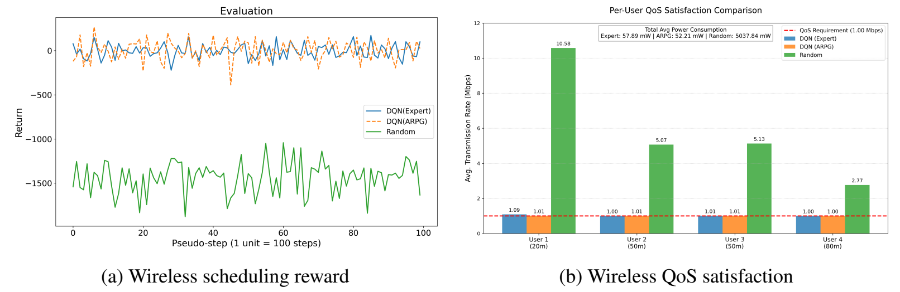

Isaac Lab / 0:52
ARPG vs. expert
Each task pairs a policy trained with Isaac Lab’s expert-designed pipeline with one trained using the ARPG-generated pipeline.
Open video file ↗NeurIPS 2026Sejong University
A Dependency-Aware Agentic Framework for Automated Robot Policy Generation

Isaac Lab / 0:52
Each task pairs a policy trained with Isaac Lab’s expert-designed pipeline with one trained using the ARPG-generated pipeline.
Open video file ↗Isaac Sim / 0:20
Changing the task description and robot configuration gives ARPG a new objective, from jumping in place to moving a cube between two tables.
Open video file ↗Method
ARPG first defines the objective, states, actions, rewards, and constraints of a Markov decision process. Agents check intermediate decisions and repair inconsistencies before separate coding agents build the simulator components used to train the policy.

Supplementary material · Section B
What does a robot observe, what can it control, and what earns a reward? Explore ARPG’s answers for each benchmark, then follow the original equations in its logbook.
For a shorter walkthrough of how ARPG arrives at this reward, read Appendix H (PDF).
Appendix G
These experiments reuse the MDP modeling pipeline with a single coding agent for lightweight environments. Select a figure to inspect the original plots.

Fig. 5 / Appendix G.3
CartPole and MountainCar test classic control. Drone delivery introduces an energy budget, and inventory management introduces demand uncertainty. The plots compare each learned policy with optimal and random baselines.

Fig. 6 / Appendix G.4.1
The policy selects a user and transmit power at each time slot. It achieves rewards close to the expert DQN while meeting the required average data rate.

Fig. 7 / Appendix G.4.2
The policy shifts grid purchases and battery use as electricity prices change. Its annual cost was 148.72, within 0.90% of the expert policy’s 147.40 (Table 15).